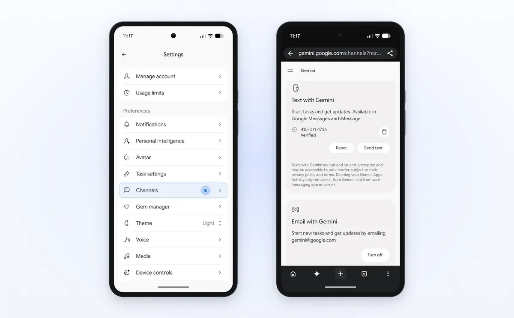

任務模式：Gemini 從聊天框走到結帳頁
導讀Gemini 推出「任務」功能，由 Labs、Gemini app 暨 AI Studio 副總裁 Josh Woodward 署名的官方產品公告，以自身案例示範打電話、判讀帳單與代客結帳——官方公告，成效均為 Google 自述
Gemini 這次賣的不是更會聊，而是能收尾：把一則口語指令變成日曆上的一筆行程、購物車裡的東西與 Wallet 裡的一張收據。
入口不只一個。原文列了三條：app 首頁把 Chat 切到 Task、用 RCS 傳簡訊、把信轉寄到 gemini@google.com。
免費開放的是美國、日本、韓國、加拿大、澳洲、印度六國，原文說這覆蓋「數億人」；進階功能則從美國先行。
另兩條通道另有條件：原文寫「從美國開始」，轉寄 email 與傳簡訊都先在美國開放。
對象設得很日常：被課表、會議與接送小孩塞滿，事情一直堆著的那種人。目標是一句「省時也省錢」。
本站重繪，非原文圖；原文以案例文字敘述過程，未給此五段切分與順序，節點由編輯整理。
第三段之所以成立，是因為資料本來就在 Google：車是 2019 年的 Odyssey、家住哪、哪些時段有空，都無須另外輸入。
聊天你本來就有；這次換的是它能不能替你按到別人的按鈕——經銷商的預約系統、公用事業入口、結帳頁。
並行是它與人不同的地方：兩家經銷商同時撥、等候音樂由它聽，選的是接受預約而非只能現場候位的那家。
第四段是設計上的煞車。原文寫得明確，Gemini 的設計是在關鍵步驟前停下，要求你確認或預先核准，之後才按下「購買」；常規動作可按「一律允許」。

那行警語只出現在截圖：Text with Gemini 的訊息不是端到端加密，內容可能經電信商處理，正文並未重述。
四個案例，四條不同的整合
把原文的示範拆開看，撐住的不是同一個模型，而是四組不同的資料源與支付管道。
| 任務 | 動用的整合 | 原文數字與限定 |
|---|---|---|
| 預約保養 | Personal Intelligence、Google Maps、電話 | 同時打兩家、含等候音樂，5 分鐘內排進日曆；先表明是 AI，商家可隨時退出 |
| 判讀 $389 電費 | Google Password Manager 登入公用事業入口、掃 email 舊帳單 | 找出熱泵在下午 4 點尖峰電價啟動；原文未給省下的金額 |
| 買 USB-C 充電器 | Google Shopping Graph、Google Pay | 追問瓦數與顏色、找到折扣碼再省 $10；可先設硬性消費上限 |
| 加菜到 Instacart | RCS、Instacart | 拍空麥片盒補品項後「交接」給 Instacart 完成結帳；目前接 60+ app |
共同點是不另建資料。原文的說法是：這些敏感資料本來就安全地放在 Google，你不必再把它送到別的地方。
四條裡有三條牽涉錢或帳號權限，這是原文用整節篇幅解釋防護的原因。
還有一個沒進表格的案例：把一整批學校信件轉寄到 gemini@google.com，不到一分鐘每個日期都進了日曆，連太太一起被邀請。
它還多走一步：發現籃球練習撞期，主動問要不要傳訊給別的家長換共乘。
付款那段給的限制最硬：支援的卡片以數位權杖代替卡號，但你原有的點數、現金回饋與購物保障照算。
收據與追蹤進 Google Wallet，Wallet 即日起擴到 iOS；下一步是把 UCP 接進來，原文沒給時程。
雜貨那段的動詞值得記：清單加完是「交接」給 Instacart 結帳。最後那一下不是 Gemini 按的。
防線鋪在 VM 與確認鍵之間
安全架構的起點是隔離而非審查：每個任務跑在自己帳號專屬的硬體隔離 VM，原文強調不與其他使用者共用。
本站重繪，非原文圖；原文並列為「多層防禦」，未給此四層排序，順序為編輯依敘述整理。
第四層不是單點，而是全程可介入：任務跑到一半你隨時能插話補指令，不必等它做完再重下一次。
Always allow 的方向要讀清楚：它省掉的是反覆詢問，不是把 Buy 前的確認整組關掉。
前三層你改不了，第四層可以。可調 task 設定、斷開 Google 或第三方 app、隨時刪對話紀錄，三件事都在設定裡。
原文也自己承認上限：測得再多，任務仍可能失敗或沒打到點，遇到就按 thumbs down 回報。
更結構性的限制在網站端。有些站 Gemini 能走完大半流程，然後把畫面交回你按最後一顆按鈕。
原文把安全寫成邀請題：除紅隊外還開放 AI VRP 懸賞，等於讓外部研究者一起打 agent 的攻擊面。
它對 bot 的判斷值得抄下來：過去數十年 bot 預設被封鎖，因為多數是惡意；個人助理要的是更細緻的做法與可驗證的開放標準。
（編輯觀點：這篇的技術含量在整合清單與權限設計，不在模型名稱；Gemini 4 Hydrogen 全文只出現一次，沒有任何數字。）
帶走三件事
門檻是整合，不是模型。六國免費、60+ app 與四個資料源才是真本事。
確認鍵是設計，不是免責。能預先核准也能設上限，權限要自己收。
最後一哩還沒自動化。網站未適配時，畫面仍會交回你手上按。
同一主題的其他館藏
導讀為本站編輯內容（AI 摘解自原文與館藏重點，非官方文件）；案例成效（5 分鐘、$389、省 $10）皆為 Google 自述，無第三方驗證；圖解 A、B 為本站重繪，原文未給該切分與排序。內容經對照原文的獨立事實審查後發布。